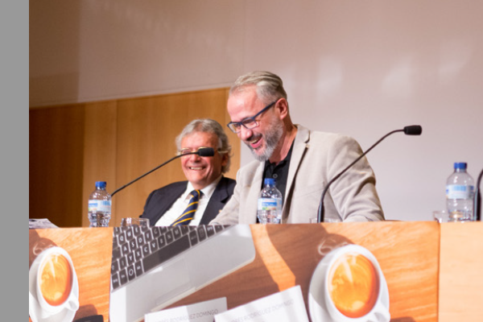
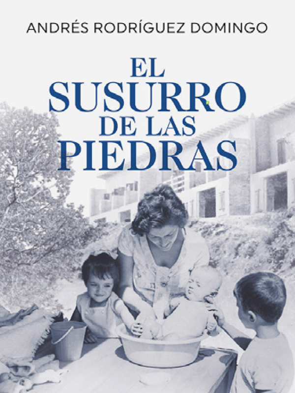
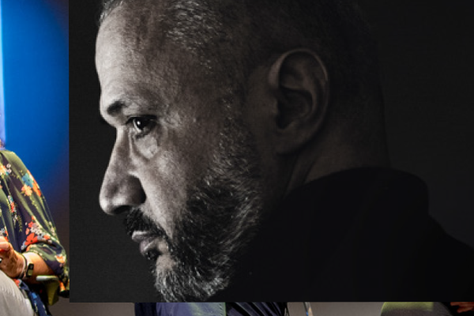

Andrés Rodríguez Domingo
Me dedico a escribir novelas que entretienen, emocionan, y casi sin darte cuenta te hacen pensar un poco.Transito entre la ficción y el ensayo.En mis páginas exploro la fe como búsqueda y no como certeza, la memoria como tejido que nos une a lo que fuimos, y la resiliencia como impulso vital para seguir adelante.

Sobre mi
Convierto mi experiencia en una historia. O dos…
Escribir me ayuda a entender lo que vivo, y de paso comparto con quien me lee un lugar donde reconocernos para seguir tirando juntos.
Visión
Empecé a escribir casi sin darme cuenta, desde ese momento en que leer me emocionó como nunca antes. La lectura y la escritura se convirtieron en mis muletas para encontrar rumbo y calma.
Método
Observar, escuchar y dejar que todo cale.El proceso es más bien una cadencia: ando,pienso, leo, converso, corro, miro, escucho… hasta que veo venir a esa historia que aparece a lo lejos.
Futuro
No sé cómo me lo monto pero el amor siempre acaba siendo el motor de todas mis historias, reales o inventadas. Así que seguiré escribiendo sin pudor, porque la vergüenza no me sirve.
Mis libros
Los más mejores
Mis dos libros más leídos —mis superventas— son muy distintos entre sí. No se parecen en nada y, a la vez, tienen mucho en común.
ENSAYO
Diario de un Optimista Novato
NOVELA
El Dolor de la Sal
Historias que cuando se comparten pesan un poco menos. Diario de un optimista novato nació casi sin querer, con la idea de reírme un poco de mis propias miserias. No es un libro de autoayuda (eso se lo dejo a otros), es más bien un ejercicio de autocrítica con humor. El dolor de la sal, en cambio, es otra historia: dura, oscura y con un trasfondo tristemente real. Ahí me metí de lleno en el infierno de la violencia machista, escuchando testimonios que me marcaron para siempre. Lo escribí con el corazón encogido, intentando hacer justicia a esas voces. Al final, creo que lo que une a los dos libros es lo mismo: las ganas de hablar de lo que duele, ya sea con humor o con crudeza.
Cerrando el círculo
“El Susurro de las piedras se hizo esperar… nos traslada a Barcelona con el pastor Sebastián Rodríguez y su familia. En plena dictadura, su lucha incansable frente a la represión religiosa se convierte en un testimonio imprescindible para rescatar del olvido la historia del protestantismo en España.”
Saber más

OPINIÓN
Qué dice la gente de mis libros?
Otras actividades

Literatura en voz alta
Porque escribir es sembrar preguntas. Pero conversar es hacerlas crecer.

Historia de una conciencia
La memoria robada y El susurro de las piedras condensan una vida en dos volúmenes.

El contacto con los lectores
Escribir es sembrar una historia. Pero sois vosotr@s quienes la hacéis crecer.